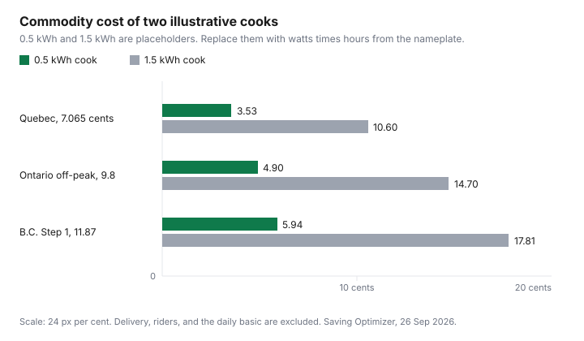

Household Items and Supplies · Canada
Air Fryer vs Oven vs Toaster Oven in Canada: Purchase Price and Hydro Cost Compared
An air fryer saves money only if the purchase, plus the kilowatt-hours of the cooks you actually run, is less than heating the oven you already own. This page has the commodity rates. It does not have a shelf price or a wattage. Canadian Tire product pages for Ninja air fryers, opened 26 Sep 2026, returned neither a selling price nor a nameplate watt. Costco and Walmart tags did not load either. There is no tier table and no "best air fryer." There is a formula, two placeholder cooks, and the rates those cooks would cost in Ontario, British Columbia, and Quebec.
The clock that decides an Ontario dinner is the TOU, tiered, and ultra-low overnight guide. Step 1 versus Step 2 in B.C. is the BC Hydro rates guide. Rate D's two energy prices are the Hydro-Québec guide. If the appliance has an EnerGuide label, how to read it is the EnerGuide guide. A countertop fryer often will not be in that database. The watts still have to come from the nameplate on the machine.
Disclosure: Air fryers and toaster ovens sold through Amazon.ca storefronts are an offer type. Saving Optimizer may earn a commission if we later add a partner link. We do not currently claim an Amazon partnership. Education only. This is not a product ranking.
Key takeaways
- No Canadian purchase price and no wattage loaded on 26 Sep 2026. Dollar tiers are omitted.
- Kilowatt-hours = watts × minutes ÷ 60 ÷ 1,000. Cook minutes in this article are placeholders, not a recipe.
- An illustrative 0.5 kWh cook is 3.53 cents at Hydro-Québec's first Rate D price (7.065 cents, in force 1 Apr 2026), 4.90 cents at Ontario off-peak (9.8 cents, set 1 Nov 2025), and 5.94 cents at BC Hydro Step 1 (11.87 cents).
- The same placeholder at 1.5 kWh is 10.60, 14.70, and 17.81 cents. Delivery, riders, and the daily basic are not in those cents.
- A second basket cook can erase the gap. Black Friday 2026 is Friday 27 November and Boxing Day is 26 December. Those are calendar dates, not a percent off.
What an air fryer costs to buy in Canada at each tier
A tier is a price you can divide, not a slogan on the box. This draft opened Canadian Tire pages for Ninja models and did not receive a shelf price or a wattage in the text. Warehouse and Walmart listings did not load a tag either. Amazon.ca is an offer type under the disclosure, and no live Amazon price is printed here because none was captured as a dated shelf price for a named model. Without those tags there is no compact, mid, or large dollar band to publish. Write the price on the unit in front of you, including tax if the tag is tax-in, and the model number. That number is the tier for your house. A later sale is only a saving against that written price.
The purchase sits in year one. Electricity sits on every cook after that. A machine that is $40 cheaper and 200 watts thirstier can lose over a year of dinners, and the reverse is also true. You cannot see which one it is until both the tag and the watts are on paper. This section stops at that blank on purpose.
kWh per cook: air fryer vs full oven vs toaster oven
The energy of one cook is watts times hours. In the units printed on a Canadian nameplate, that is watts × minutes ÷ 60 ÷ 1,000. A placeholder pair, labelled so it is not mistaken for a Ninja spec, shows the arithmetic: 1,500 watts for 20 minutes is 1,500 × 20 ÷ 60 ÷ 1,000 = 0.5 kWh. The same 1,500 watts for 60 minutes is 1.5 kWh. Neither pair was read off an air fryer, a wall oven, or a toaster oven on 26 Sep 2026. They exist so the rate table has an input. Replace both numbers with the watts on your machine and the minutes you actually cook.
A full oven and a toaster oven use the same formula. They do not share a wattage with the air fryer, and this draft will not invent one to make a winner. Preheat counts. If the oven is on for 15 minutes before the food goes in, those minutes are part of the cook. If the air fryer needs no preheat on its own manual, do not add minutes it did not use. If you cook the same meal as two basket loads, add the two results. The comparison is total kilowatt-hours for the meal, not the badge on the door.
Cost per use at provincial electricity rates (table)
These are commodity rates, not the whole bill. Ontario figures are the Ontario Energy Board's Regulated Price Plan prices set for 1 Nov 2025: time-of-use off-peak 9.8 cents, mid-peak 15.7 cents, on-peak 20.3 cents per kilowatt-hour. Ultra-low overnight is 3.9 cents, and the weekday 4 p.m. to 9 p.m. ultra-low price is 39.1 cents. The hours, and the weekend off-peak that matches the 9.8 cent time-of-use price, are the Ontario guide. B.C. figures are BC Hydro Rate Schedule 1101 in the tariff text opened 26 Sep 2026: Step 1 at 11.87 cents for the first 675 kWh in a monthly bill, or 1,350 kWh bi-monthly, then 14.08 cents, plus a 23.44 cent daily basic. Québec figures are Hydro-Québec Rate D in force 1 Apr 2026: 7.065 cents per kilowatt-hour up to 40 kWh a day, then 11.142 cents, plus 46.154 cents a day for system access. Delivery and riders are extra in every province.
| Rate | Cents per kWh | 0.5 kWh cook | 1.5 kWh cook |
|---|---|---|---|
| Hydro-Québec Rate D, first tier | 7.065 | 3.53 cents | 10.60 cents |
| Ontario TOU off-peak | 9.8 | 4.90 cents | 14.70 cents |
| Ontario TOU mid-peak | 15.7 | 7.85 cents | 23.55 cents |
| Ontario TOU on-peak | 20.3 | 10.15 cents | 30.45 cents |
| Ontario ULO overnight | 3.9 | 1.95 cents | 5.85 cents |
| Ontario ULO, weekday 4–9 p.m. | 39.1 | 19.55 cents | 58.65 cents |
| BC Hydro Step 1 (RS 1101) | 11.87 | 5.94 cents | 17.81 cents |
| BC Hydro Step 2 (RS 1101) | 14.08 | 7.04 cents | 21.12 cents |
| Hydro-Québec Rate D, second tier | 11.142 | 5.57 cents | 16.71 cents |
A dinner at 5 p.m. on a weekday in Ontario is the 39.1 cent row if you are on ultra-low overnight, not the 9.8 cent row. The same food at 11:30 p.m. is the 3.9 cent row. The chart draws only three of these rates, the ones a household meets first: Québec's first block, Ontario off-peak, and B.C. Step 1. It does not draw an air fryer against an oven, because that comparison needs watts this draft does not have.

When an air fryer replaces the oven—and when it doesn't (family size)
Replacement is a fit question, then an energy question. If one basket holds the meal you used to put on one sheet pan, the air fryer can stand in for that meal, and you compare one cook with one cook. If the basket holds half the pan, you run the air fryer twice or you keep the oven. Two times 0.5 kWh is 1.0 kWh. That can still beat a 1.5 kWh oven placeholder, and it can lose to a real oven whose nameplate is lower than the placeholder. The arithmetic only works after you substitute your watts. This draft did not open a basket volume in litres, so there is no "families of four need X litres" line.
A household of one that reheats last night's potatoes is the case where a full oven is the expensive tool, even before the rate. A household that roasts a chicken and a tray of vegetables at the same time is the case where the oven's one preheat can beat two or three basket cycles. Write last week's dinners in two columns, oven and countertop, and count cycles. The count is the family-size test. A marketing photo of fries is not.
Sale timing: when air fryers hit their lows in Canada
A low is a model number that is cheaper than the price you wrote down, on a date you can check. Black Friday 2026 falls on Friday 27 November. Boxing Day is 26 December. Those are calendar dates. They are not a measured percent off, and this draft did not open a 2026 air-fryer flyer with a dollar tag. How to test a doorbuster against the model you specced is the Black Friday and Boxing Day guide. Use that page for the sale calendar. Do not treat a brand name in an event announcement as a discount.
Canadian Tire, Walmart, and Costco prices for a named fryer did not load on 26 Sep 2026, so none of those banners is called the cheap week. Amazon.ca remains an offer type, not a partnership and not a dated price. If you buy during a member event, the membership fee belongs in the purchase column when you would not have paid it otherwise.
Counter-space and duplicate-gadget audit
The third machine is the one that does a job you already own a machine for. List the oven, the toaster oven, the microwave, and any fryer already on the counter. For each, write the jobs it did in the last month: toast, reheat, roast, bake, air-crisp. If the toaster oven already has an air-crisp setting you use, a new fryer is a second box for the same job. The hydro cost of the new box is zero on the days it sits idle, and the purchase cost is not. Idle gadgets are the leak.
Before it arrives, measure the footprint and the cupboard you will retire something into. A fryer that lives on top of the toaster oven has not freed the counter. If you cannot name the appliance that leaves, do not add one. The audit is four lines on paper. It does not need a wattage, which is why it still works on a day when the product pages did not load.
Sources & date stamps
- Ontario Energy Board electricity rates, opened 26 Sep 2026: time-of-use 9.8 / 15.7 / 20.3 cents per kWh, prices set for 1 Nov 2025. Ultra-low overnight 3.9 cents, and weekday 4 p.m. to 9 p.m. at 39.1 cents, as printed with that clock.
- BC Hydro electric tariff, RS 1101 text opened 26 Sep 2026: Step 1 11.87 cents, Step 2 14.08 cents, basic charge 23.44 cents a day.
- Hydro-Québec electricity rates in force 1 Apr 2026, opened 26 Sep 2026: Rate D 46.154 cents a day, 7.065 cents then 11.142 cents per kWh.
- Canadian Tire Ninja air-fryer pages opened 26 Sep 2026 did not return a shelf price or a wattage. No purchase tier is printed.
Frequently asked questions
Does an air fryer use less electricity than an oven?
An air fryer uses less only when its cook uses fewer kilowatt-hours than the oven cook it replaces. Kilowatt-hours equal watts times minutes, divided by 60, then by 1,000. No nameplate wattage loaded on 26 Sep 2026, so this guide does not declare a winner. A short cook in a small basket can still lose if you run it twice for the same meal.
How much does it cost to run an air fryer in Canada?
It costs the kilowatt-hours of that cook times your commodity rate, and delivery is extra. At the rates opened 26 Sep 2026, an illustrative 0.5 kWh cook is 3.53 cents on Hydro-Quebec's first Rate D tier (7.065 cents), 4.90 cents at Ontario off-peak (9.8 cents), and 5.94 cents on BC Hydro Step 1 (11.87 cents). The same placeholder at 1.5 kWh is 10.60, 14.70, and 17.81 cents. Those cooks are not a product's nameplate.
Can an air fryer replace my oven?
It replaces the oven for meals that fit in one basket in one cook. If the household needs a second cook, add the kilowatt-hours instead of assuming a saving. Basket litres were not on a page this draft will quote, so there is no family-size cutoff in litres. Read the basket on the box you are holding, then compare it with the tray you use now.
When are air fryers cheapest in Canada?
Write today's price for the exact model, then compare it on Black Friday, Friday 27 November 2026, and on Boxing Day, 26 December 2026. Those are calendar dates, not a measured percent off. No Canadian Tire, Walmart, or Costco air-fryer tag loaded on 26 Sep 2026. How to test a sale price is the Black Friday guide.
Is a toaster oven a better buy?
It is a better buy when it already does the air-fryer jobs and you will not add a second box. No toaster-oven wattage or price loaded, so this guide does not price one against an air fryer. If both stay on the counter, you pay for two purchases and you still heat only one of them per meal.